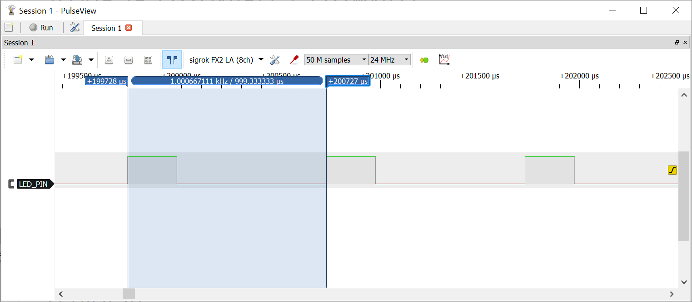
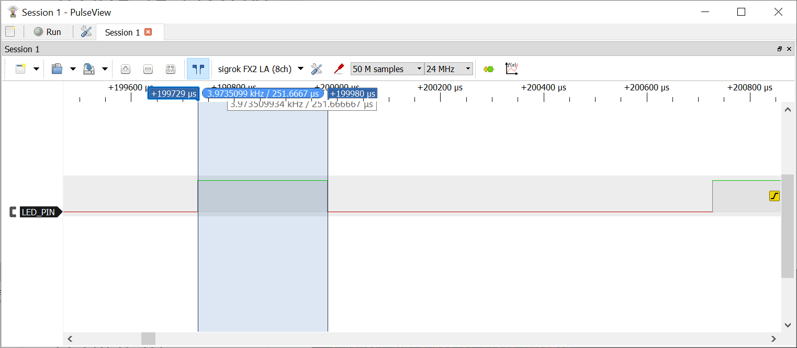
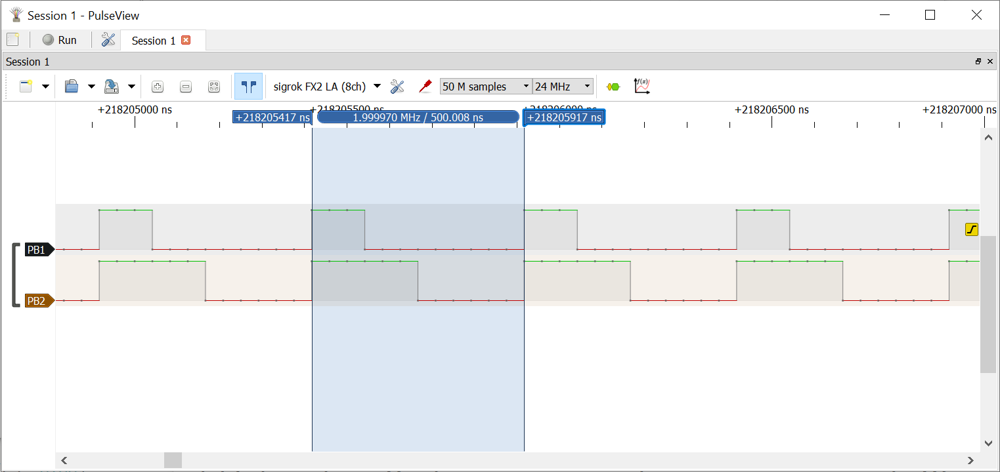
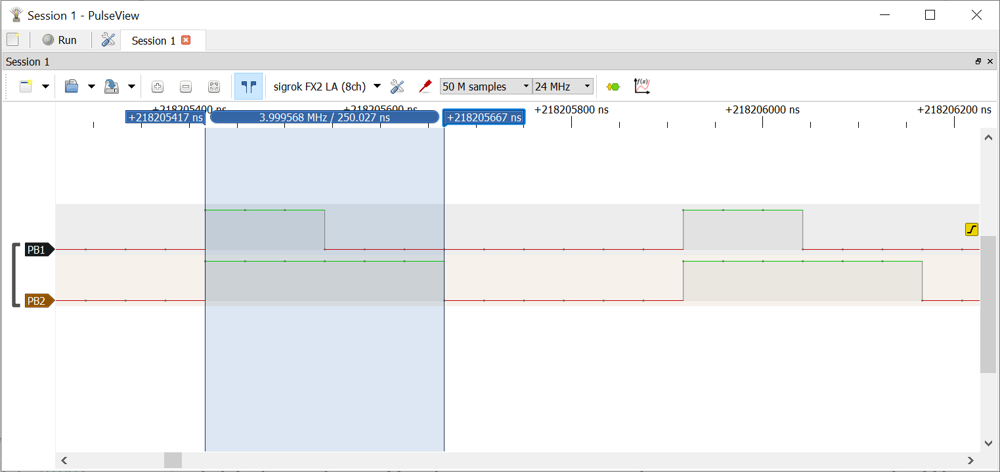
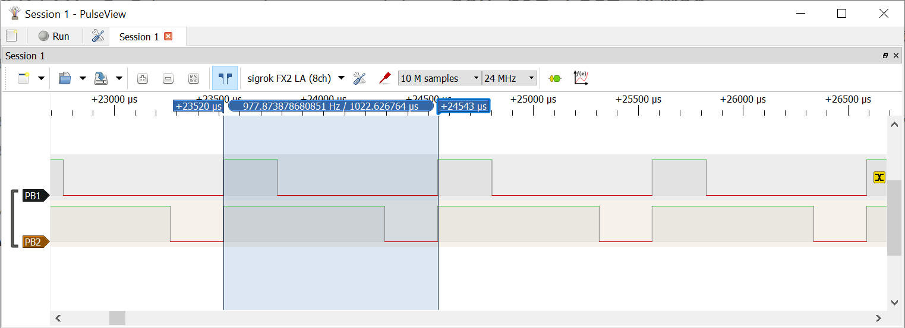
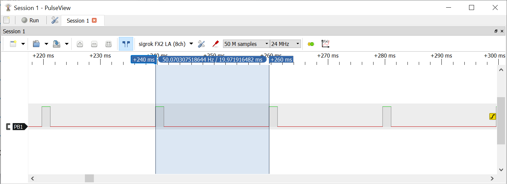
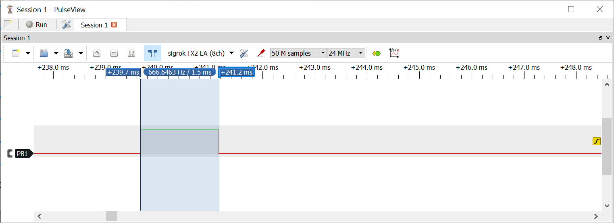

การเขียนโปรแกรมภาษา C สำหรับ AVR (ATmega328P): ตอนที่ 8#
Keywords: Atmel AVR MCU, ATmega328P, Bare-metal C Programming, AVR-GCC, avr-libc
- การเขียนโปรแกรมภาษา C แบบ Bare-Metal และการใช้ไลบรารี avr-libc
- การใช้งาน Timer/Counter1: Fast PWM (Dual Channels)
- การใช้งาน Timer/Counter1: 8-bit Fast-PWM (Mode 5)
- การใช้งาน Timer/Counter1: PWM Phase-Correct (Mode 10)
▷ การเขียนโปรแกรมภาษา C แบบ Bare-Metal และการใช้ไลบรารี avr-libc#
บทความในตอนที่ 8 สาธิตตัวอย่างการเขียนโค้ดภาษา C เพื่อใช้งานวงจรที่เรียกว่า Timer/Counter1 (วงจรตัวนับหมายเลข 1) ภายในชิป ATmega328P และนำเสนอเนื้อหาต่อเนื่องจากตอนที่แล้ว ดังนั้นแนะนำให้ศึกษาเนื้อหา ตอนที่ 7 ด้วยเช่นกัน
รายละเอียดเกี่ยวกับรีจิสเตอร์ที่เกี่ยวข้องกับการทำงานของ Timer/Counter1 สามารถดูได้เอกสารของผู้ผลิต ATmega328P Datasheet
▷ Timer/Counter1: Fast PWM (Single Channel)#
โค้ดนี้สาธิตการทำงานของวงจร Timer/Counter1 ในโหมด Fast PWM โดยจะต้องใช้ขาเอาต์พุตเป็นขา PB1 / OC1A
ในโหมดนี้ จะต้องมีการตั้งค่าให้รีจิสเตอร์ ICR1 เพื่อใช้เป็นค่าสูงสุด TOP
เมื่อตัวนับ TCNT1 นับจาก 0 ถึงค่าที่กำหนดไว้ใน ICR1 จะเริ่มต้นนับใหม่
ดังนั้นการกำหนดค่าของ ICR1 เป็นการกำหนดคาบของสัญญาณ PWM
ในการกำหนดความกว้างช่วงที่เป็น HIGH หรือ เรียกว่า PWM Duty Cycle
จะต้องตั้งค่าในรีจิสเตอร์ OCR1A โดยที่ค่าของรีจิสเตอร์นี้ต้องไม่มากกว่าค่าในรีจิสเตอร์
ICR1
ถ้าตั้งค่าของ OCR1A มีค่าเป็นครึ่งหนึ่งของ ICR1 ก็จะได้ PWM Duty Cycle
เท่ากับ 50% สำหรับสัญญาณที่ขาเอาต์พุต PB1 / OC1A
ในตัวอย่างนี้ตั้งค่า ICR1 ให้ได้ PWM Frequency เท่ากับ 1kHz หรือ มีคาบเท่ากับ
1000 usec และตั้งค่า OCR1A ให้ได้ PWM Duty Cycle 25%
(ความกว้างพัลส์เท่ากับ 250 usec)
#include <avr/io.h>
#define PWM_PIN (PB1) // Use the OCR1A pin
#define PRESCALER (64) // Define prescaler value as 64
#define FREQ_HZ (1000UL) // Define the frequency as 1000 Hz
#define TOP_VALUE (F_CPU/(FREQ_HZ * PRESCALER))
void initTimer1() {
TCCR1A = TCCR1B = 0;
TCNT1 = 0x000;
// Set TOP value for the PWM period
ICR1 = (uint16_t)(TOP_VALUE-1);
// Set OCR1A value for 25% duty cycle
OCR1A = (uint16_t)(TOP_VALUE/4);
// Configure Timer1 in Fast PWM mode (mode 14) with prescaler of 64
// Set non-inverted output on OC1A
// Use Fast PWM mode and set prescaler to 64
TCCR1A |= (1<<COM1A1) | (1<<WGM11);
TCCR1B |= (1<<WGM13) | (1<<WGM12) | (1<<CS11) | (1<<CS10);
}
int main(void) {
// Set the DDR for PB1 / OC1A pin as output
DDRB |= (1 << PWM_PIN);
initTimer1(); // Initialize Timer1
while (1) {}
return 0;
}

รูป: การวัดคาบของสัญญาณเอาต์พุต (วัดได้ประมาณ994.67 usec ใกล้เคียง 1000 usec โดยทฤษฎี)

รูป: การวัดความกว้างพัลส์ของสัญญาณเอาต์พุต (วัดได้ประมาณ251.67 usec ใกล้เคียง 250 usec โดยทฤษฎี)
▷ Timer/Counter1: Fast PWM (Dual Channels)#
โค้ดตัวอย่างนี้สาธิตการใช้วงจร Timer/Counter1 ในโหมด Fast PWM
เพื่อสร้างสัญญาณ PWM จำนวน 2 ช่อง ที่มีความถี่เท่ากัน โดยเลือกตัวหารความถี่เป็น /1
และตั้งค่า ICR1 เท่ากับ 7 ดังนั้นจะได้ความถี่ของสัญญาณ PWM
เท่ากับ 16MHz/8 = 2MHz หรือ มีคาบเท่ากับ 0.5 usec (500 nsec)
#include <avr/io.h>
#define PERIOD_CYC (8)
void initTimer1() {
TCCR1A = TCCR1B = 0;
TCNT1 = 0x000;
ICR1 = (PERIOD_CYC-1);
OCR1A = (2)-1; // for OC1A (2/8 = 25% duty cycle)
OCR1B = (PERIOD_CYC/2)-1; // for OC1B (4/8 = 50% duty cycle)
// Set timer1 in Fast PWM mode (mode 14)
TCCR1A |= (1<<WGM11) | (1<<COM1A1) | (1<<COM1B1);
TCCR1B |= (1<<WGM13) | (1<<WGM12) | (1<<CS10);
}
int main() {
DDRB |= (1 << PB1); // Set pin PB1 (D9 pin) as output
DDRB |= (1 << PB2); // Set pin PB2 (D10 pin) as output
initTimer1();
while(1) {}
return 0;
}

รูป: การวัดคาบของสัญญาณเอาต์พุต (วัดได้ประมาณ500 usec)

รูป: การวัดความกว้างของพัลส์ของสัญญาณเอาต์พุต PB1 (วัดได้ประมาณ250 usec)

รูป: การวัดความกว้างของพัลส์ของสัญญาณเอาต์พุต PB2 (วัดได้ประมาณ125 usec)
▷ Timer/Counter1: 8-bit Fast-PWM (Mode 5)#
การทำงานในโหมด Fast-PWM ยังมีให้เลือกอีกหลายแบบ เช่น ความละเอียด
ตั้งแต่ 8 บิต จนถึง 10 บิต และมีค่าสูงสุดตามจำนวนบิต ถ้าใช้ความละเอียด 8 บิต
ค่าสูงสุดของ TCNT1 ที่จะนับได้คือ 0x00FF (255)
โค้ดตัวอย่างนี้สาธิตการทำงานในโหมด 8-bit Fast-PWM และสร้างเอาต์พุตที่ขา PB1 และ PB2 ที่มีความถี่เท่ากัน แต่มีความกว้างพัลส์ต่างกัน (ใช้งาน Non-inverting Output Compare A / B Match)
ในตัวอย่างนี้ได้ตั้งค่าตัวหารความถี่ /64 ดังนั้นความถี่ของสัญญาณ PWM เท่ากับ 16MHz/64/256 = 976.56 Hz หรือ มีคาบเท่ากับ ** 1024 usec**
#include <avr/io.h>
#define PWM_A_PIN (PB1)
#define PWM_B_PIN (PB2)
// 16MHz/64/256 = 976.56 Hz or 1.024 msec
void initTimer1() {
// Set Fast PWM (Mode 10),
// 8-bit mode and non-inverting OC1A and OC1B
TCCR1A = (1<<COM1A1) | (1<<COM1B1) | (1<<WGM10);
TCCR1B = (1<<WGM12) | (1<<CS11) | (1<<CS10); // Set prescaler /64
OCR1A = (1<<8)*1/4; // 25% Duty Cycle
OCR1B = (1<<8)*3/4; // 75% Duty Cycle
}
int main() {
DDRB |= (1 << PWM_A_PIN); // Set PB1/OC1A (pin 9) as output
DDRB |= (1 << PWM_B_PIN); // Set PB2/OC1B (pin 10) as output
initTimer1();
while (1) {}
return 0;
}

รูป: การวัดคาบของสัญญาณเอาต์พุต PB1 / PB2 (วัดได้ประมาณ1022.62 usec)
▷ Timer/Counter1: PWM Phase-Correct (Mode 10)#
โค้ดตัวอย่างนี้สาธิตการใช้งาน Timer/Counter1 ในโหมด PWM Phase-Correct (Mode 10)
และมีค่าบิต WGM1[3:0]="1010"
ในโหมดนี้ รีจิสเตอร์ของตัวนับ TCNT1 จะนับขึ้นจนถึงค่าสูงสุด (TOP) แล้วนับลงจนถึงค่าต่ำสุด (0)
ดังนั้นจึงเป็นการนับขึ้นและลงในสองทิศทางสำหรับการนับหนึ่งรอบ (Dual-Slope Operation)
แตกต่างจากโหมด Fast PWM ซึ่งเป็นการนับขึ้นในทิศทางเดียว (Single-Slope Operation)
การเลือกโหมดเพื่อกำหนดสถานะลอจิกของขาเอาต์พุตที่ขา PB1 / OC1A
ได้ตั้งค่าบิต COM1A[1:0]="10"
ทำงานแบบ Non-inverting Compare Output A มีลักษณะดังนี้
- เมื่อตัวนับ
TCNT1นับขึ้นได้เท่ากับOCR1Aจะทำให้เอาต์พุตเปลี่ยนเป็นลอจิก LOW - เมื่อนับถึงค่าสูงสุด แล้วนับลงมาจนได้ค่าเท่ากับ
OCRA1จะทำให้เอาต์พุตเปลี่ยนเป็นลอจิก HIGH
ดังนั้นถ้ากำหนดค่าในรีจิสเตอร์ OCR1A น้อยลง ก็จะได้ความกว้างพัลส์ลดลงเช่นกัน
ในตัวอย่างนี้ได้เลือกตัวหารความถี่ให้เป็น /8 ดังนั้นจะนับด้วยความถี่
16MHz/8 = 2MHz และตั้งค่า ICR1 ซึ่งเป็นค่าสูงสุดในการนับไว้เท่ากับ 20000
(และคูณด้วยสองสำหรับหนึ่งรอบการนับหรือคาบ)
และจะได้สัญญาณ PWM ที่มีความถี่ 50Hz หรือ คาบเท่ากับ 20 msec
และตั้งค่า OCR1A เพื่อให้ได้ความกว้างพัลส์เท่ากับ 1.5 msec (คิดเป็น 7.5%)
#include <avr/io.h>
#include <avr/interrupt.h>
#define PWM_PIN (PB1)
#define FREQ_HZ (50UL)
#define PRESCALER (8)
#define TOP_VALUE (F_CPU/(2 * PRESCALER * FREQ_HZ))
void initTimer1() {
TCCR1A = TCCR1B = 0;
TCNT1 = 0x0000;
// Set the ICR1 register to define the TOP value
ICR1 = (uint16_t)(TOP_VALUE-1);
// Set the OCR1A register to define the PWM duty cycle
OCR1A = (uint16_t)(TOP_VALUE*15/200); // 7.5%
// Set Timer1 in Phase-correct PWM mode (mode 10)
TCCR1A |= (1 << WGM11);
TCCR1B |= (1 << WGM13);
// Set the output compare mode to clear OC1A on compare match
// and set on TOP (non-inverting)
TCCR1A |= (1 << COM1A1);
// Set the prescaler to 8 (CLK/8)
TCCR1B |= (1 << CS11);
}
int main(void) {
// Set the DDR for OC1A pin as output
DDRB |= (1 << PWM_PIN);
initTimer1(); // Initialize Timer1
while (1) {}
return 0;
}

รูป: การวัดคาบของสัญญาณเอาต์พุต (วัดได้ประมาณ19.97 msec ใกล้เคียงกับ 20 msec โดยทฤษฎี)

รูป: การวัดความกว้างของพัลส์ของสัญญาณเอาต์พุต (วัดได้ประมาณ1.5 ms)
▷ กล่าวสรุป#
บทความนี้ได้นำเสนอตัวอย่างการเขียนโค้ดภาษาซีสำหรับ ATmega328P เพื่อใช้งานวงจร Timer/Counter1 และสร้างสัญญาณ PWM เช่น การทำงานในโหมด Fast PWM และ PWM Phase-Correct
This work is licensed under a Creative Commons Attribution-ShareAlike 4.0 International License.
Created: 2023-05-05 | Last Updated: 2023-05-05